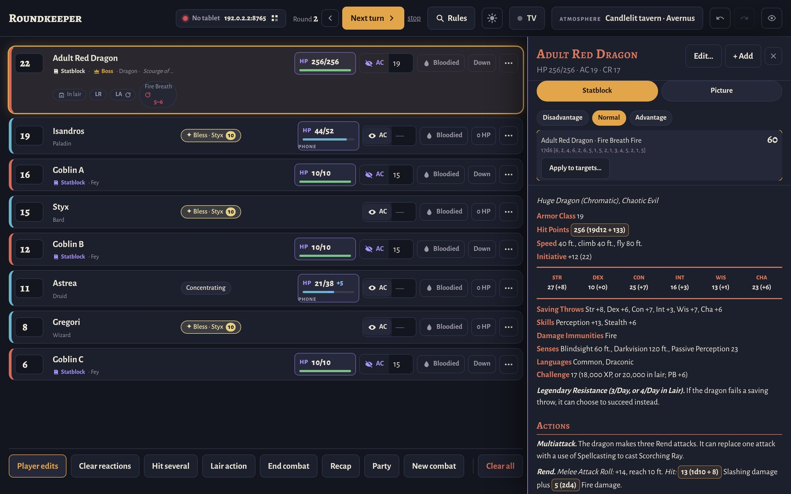
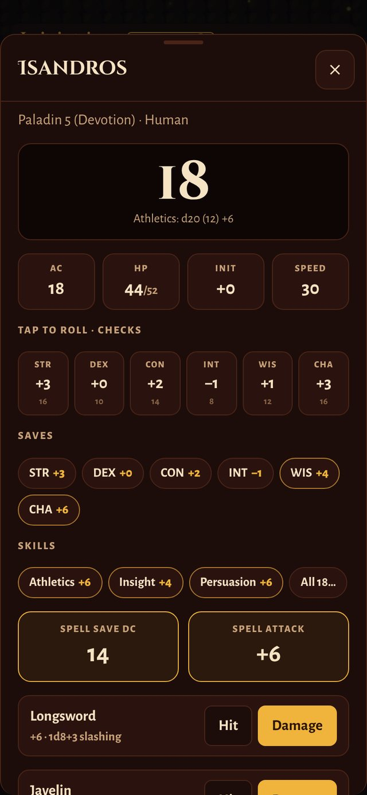
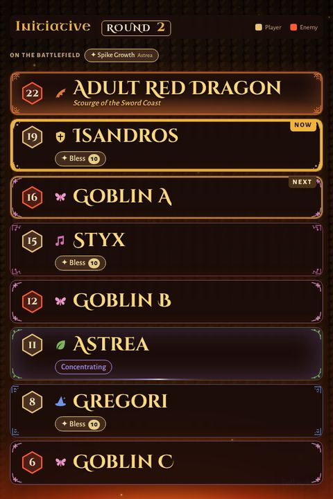
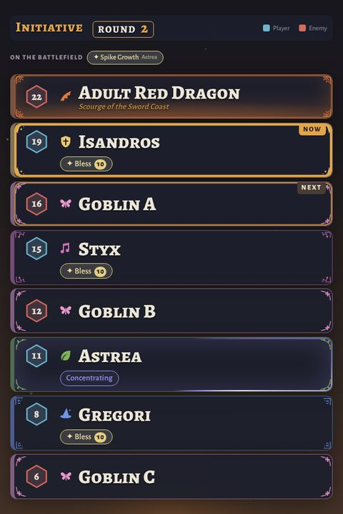
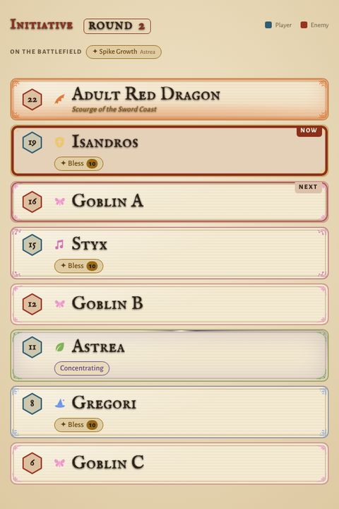
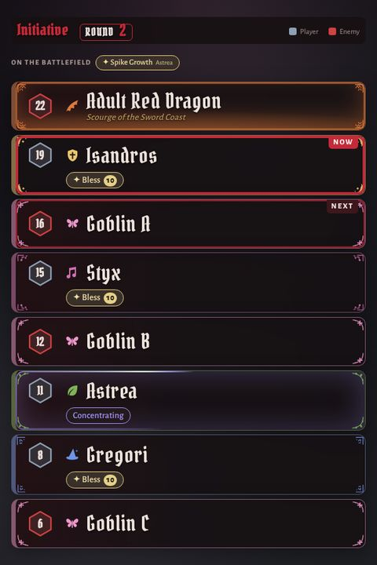
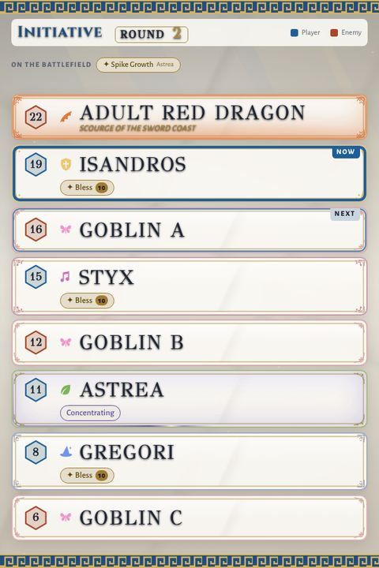
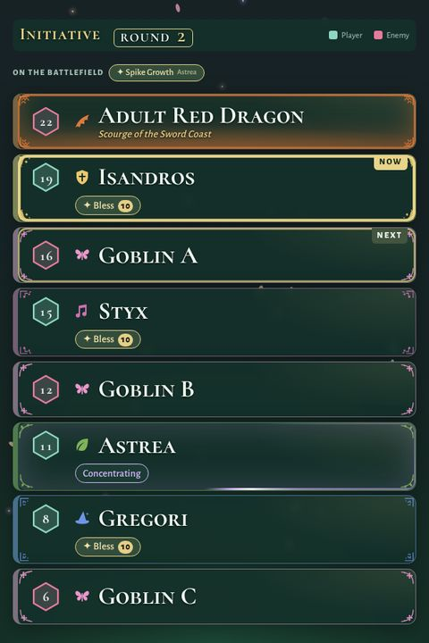
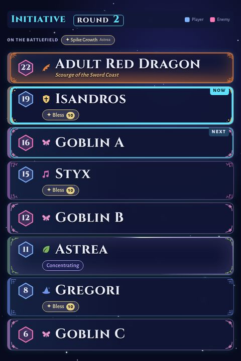
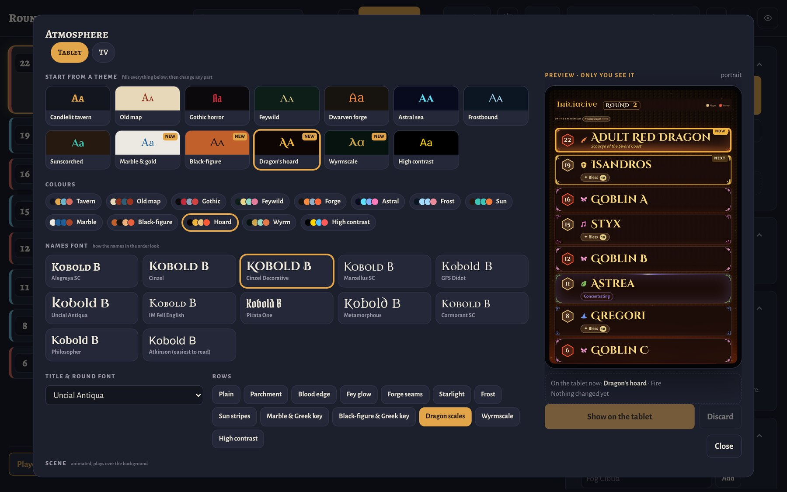

A free, offline combat tracker for in-person 5e games. The DM runs the fight on a laptop, the turn order glows on a tablet in the middle of the table, a TV shows whose turn it is across the room, and players keep their HP on their own phones.
Everything runs on your computer and everyone connects over your Wi-Fi with a browser. Nothing to install on the tablet, the TV or the phones.


Pick a theme, then change any part of it: colours, fonts, rows, an animated scene or your own background picture, with rain, snow or fog over it and the light of dawn, dusk or night. A live preview shows it before the table does. In a fight the scene answers: spells burst over the order, battlefield spells hang in the air while they last, and a nat 20 or a lair action shakes it.








Roundkeeper-windows.zip and double-click the program. On Mac or Linux, run python3 server.py.Everything runs on your computer. No accounts, no analytics, no cloud. Your fights and settings are plain files in the program's folder, backed up daily.
Paste or drop a statblock and it becomes clickable. If you have monster and spell data as JSON in the common homebrew format, the app reads it. Nothing is downloaded.
Player pages have no password, so run it on a network you trust, not in a café or at a convention.